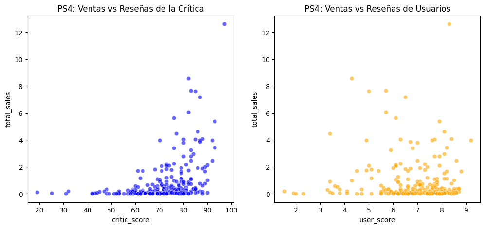

🔍 Ver código Python
# Cargar todas las librerías
import pandas as pd
import numpy as np
import seaborn as sns
import plotly.express as px
import math as mt
from matplotlib import pyplot as plt
from math import factorial
from scipy import stats as sttitle: “Proyecto Módulo 1 - Ventas Gamer” format: html
# Cargar todas las librerías
import pandas as pd
import numpy as np
import seaborn as sns
import plotly.express as px
import math as mt
from matplotlib import pyplot as plt
from math import factorial
from scipy import stats as st# Carga los archivos de datos en DataFrames
df = pd.read_csv("/datasets/games.csv")df.head()| Name | Platform | Year_of_Release | Genre | NA_sales | EU_sales | JP_sales | Other_sales | Critic_Score | User_Score | Rating | |
|---|---|---|---|---|---|---|---|---|---|---|---|
| 0 | Wii Sports | Wii | 2006.0 | Sports | 41.36 | 28.96 | 3.77 | 8.45 | 76.0 | 8 | E |
| 1 | Super Mario Bros. | NES | 1985.0 | Platform | 29.08 | 3.58 | 6.81 | 0.77 | NaN | NaN | NaN |
| 2 | Mario Kart Wii | Wii | 2008.0 | Racing | 15.68 | 12.76 | 3.79 | 3.29 | 82.0 | 8.3 | E |
| 3 | Wii Sports Resort | Wii | 2009.0 | Sports | 15.61 | 10.93 | 3.28 | 2.95 | 80.0 | 8 | E |
| 4 | Pokemon Red/Pokemon Blue | GB | 1996.0 | Role-Playing | 11.27 | 8.89 | 10.22 | 1.00 | NaN | NaN | NaN |
df.info()<class 'pandas.core.frame.DataFrame'>
RangeIndex: 16715 entries, 0 to 16714
Data columns (total 11 columns):
# Column Non-Null Count Dtype
--- ------ -------------- -----
0 Name 16713 non-null object
1 Platform 16715 non-null object
2 Year_of_Release 16446 non-null float64
3 Genre 16713 non-null object
4 NA_sales 16715 non-null float64
5 EU_sales 16715 non-null float64
6 JP_sales 16715 non-null float64
7 Other_sales 16715 non-null float64
8 Critic_Score 8137 non-null float64
9 User_Score 10014 non-null object
10 Rating 9949 non-null object
dtypes: float64(6), object(5)
memory usage: 1.4+ MB# Reemplaza los nombres de las columnas (en minúsculas)
df.columns = df.columns.str.lower()# Reemplazamos el string "TBD" por un nulo estadístico reconocido por Python "nan"
df['user_score'] = df['user_score'].replace('tbd', np.nan)
# Conversión de tipos de datos necesarios
df['year_of_release'] = df['year_of_release'].astype('Int64')
df['user_score'] = df['user_score'].astype(float)
# Tratamiento de valores ausentes específicos
df = df.dropna(subset=['name', 'genre']) # Eliminar las 2 filas huérfanas
df['rating'] = df['rating'].fillna('Unknown') # Categorizar nulos en una nueva clasificación llamada UnknownTratamiento y Justificación de Valores Ausentes
Al comenzar a trabajar con el Dataset, todas las columnas venían con mayúsculas, por lo que se procedió a cambiar los nombres por completo a minúsculas para estandarizar el código.
user_score: Se identificó la abreviatura TBD (To Be Determined). Dado que representa información que aún no existe, se reemplazó sistemáticamente por valores nulos legítimos (NaN), permitiendo transformar con éxito el tipo de dato de la columna de tipo genérico (object) a un tipo flotante analítico (float64).year_of_release: Se modificó su tipo de dato de float64 a un formato entero nativo (Int64) para representar correctamente los años cronológicos. Los valores ausentes en esta columna se imputaron cruzando la información basándose en otras plataformas del mismo juego; se utilizó el método .transform('max') agrupado por el nombre del juego (name) para heredar el año de lanzamiento si este se encontraba disponible en otra fila. Los registros restantes sin coincidencia se mantuvieron nulos para evitar sesgar las tendencias temporales.rating: Los valores vacíos se rellenaron con la etiqueta categórica “Unknown”. Esta decisión evita la pérdida masiva de datos de ventas en análisis posteriores y resulta fundamental para evaluar si los videojuegos sin clasificación pertenecen a dinámicas de mercados regionales específicos (como el caso de Japón).La presencia de datos nulos en las columnas críticas de calificaciones (critic_score, user_score) y clasificaciones (rating) obedece a razones operacionales e históricas de la propia industria:
jp_sales), carecen por completo de esta certificación norteamericana.df.info()<class 'pandas.core.frame.DataFrame'>
Int64Index: 16713 entries, 0 to 16714
Data columns (total 11 columns):
# Column Non-Null Count Dtype
--- ------ -------------- -----
0 name 16713 non-null object
1 platform 16713 non-null object
2 year_of_release 16444 non-null Int64
3 genre 16713 non-null object
4 na_sales 16713 non-null float64
5 eu_sales 16713 non-null float64
6 jp_sales 16713 non-null float64
7 other_sales 16713 non-null float64
8 critic_score 8137 non-null float64
9 user_score 7590 non-null float64
10 rating 16713 non-null object
dtypes: Int64(1), float64(6), object(4)
memory usage: 1.5+ MBprint(df.isnull().sum())
print()
print(f"Datos duplicados: {df.duplicated().sum()}")name 0
platform 0
year_of_release 269
genre 0
na_sales 0
eu_sales 0
jp_sales 0
other_sales 0
critic_score 8576
user_score 9123
rating 0
dtype: int64
Datos duplicados: 0# Rellena los años vacíos usando el año conocido del mismo juego en otra plataforma
df['year_of_release'] = df['year_of_release'].fillna(df.groupby('name')['year_of_release'].transform('max'))
df['rating'] = df['rating'].fillna('Unknown')print(df.isnull().sum())
print()
print(f"Datos duplicados: {df.duplicated().sum()}")name 0
platform 0
year_of_release 146
genre 0
na_sales 0
eu_sales 0
jp_sales 0
other_sales 0
critic_score 8576
user_score 9123
rating 0
dtype: int64
Datos duplicados: 0df.head()| name | platform | year_of_release | genre | na_sales | eu_sales | jp_sales | other_sales | critic_score | user_score | rating | |
|---|---|---|---|---|---|---|---|---|---|---|---|
| 0 | Wii Sports | Wii | 2006 | Sports | 41.36 | 28.96 | 3.77 | 8.45 | 76.0 | 8.0 | E |
| 1 | Super Mario Bros. | NES | 1985 | Platform | 29.08 | 3.58 | 6.81 | 0.77 | NaN | NaN | Unknown |
| 2 | Mario Kart Wii | Wii | 2008 | Racing | 15.68 | 12.76 | 3.79 | 3.29 | 82.0 | 8.3 | E |
| 3 | Wii Sports Resort | Wii | 2009 | Sports | 15.61 | 10.93 | 3.28 | 2.95 | 80.0 | 8.0 | E |
| 4 | Pokemon Red/Pokemon Blue | GB | 1996 | Role-Playing | 11.27 | 8.89 | 10.22 | 1.00 | NaN | NaN | Unknown |
df.info()<class 'pandas.core.frame.DataFrame'>
Int64Index: 16713 entries, 0 to 16714
Data columns (total 11 columns):
# Column Non-Null Count Dtype
--- ------ -------------- -----
0 name 16713 non-null object
1 platform 16713 non-null object
2 year_of_release 16567 non-null Int64
3 genre 16713 non-null object
4 na_sales 16713 non-null float64
5 eu_sales 16713 non-null float64
6 jp_sales 16713 non-null float64
7 other_sales 16713 non-null float64
8 critic_score 8137 non-null float64
9 user_score 7590 non-null float64
10 rating 16713 non-null object
dtypes: Int64(1), float64(6), object(4)
memory usage: 1.5+ MB# 1. Calculamos la suma de todas las regiones y la guardamos en la nueva columna 'total_sales'
df['total_sales'] = df['na_sales'] + df['eu_sales'] + df['jp_sales'] + df['other_sales']
# 2. Verificamos que la columna aparezca al final a la derecha y tenga los valores correctos
print(df[['name', 'na_sales', 'eu_sales', 'jp_sales', 'other_sales', 'total_sales']].head()) name na_sales eu_sales jp_sales other_sales \
0 Wii Sports 41.36 28.96 3.77 8.45
1 Super Mario Bros. 29.08 3.58 6.81 0.77
2 Mario Kart Wii 15.68 12.76 3.79 3.29
3 Wii Sports Resort 15.61 10.93 3.28 2.95
4 Pokemon Red/Pokemon Blue 11.27 8.89 10.22 1.00
total_sales
0 82.54
1 40.24
2 35.52
3 32.77
4 31.38 # Cantidad de juegos lanzados por año y relevancia de los períodos
# Contar lanzamientos por año
juegos_por_anio = df.groupby('year_of_release')['name'].count()
# Graficar la tendencia histórica
plt.figure(figsize=(12, 5))
sns.lineplot(data=juegos_por_anio, marker='o', color='teal')
plt.title('Cantidad de Videojuegos Lanzados por Año')
plt.xlabel('Año de Lanzamiento')
plt.ylabel('Cantidad de Juegos')
plt.grid(True)
plt.show()
print("De 1980 a 1990 los juegos no pasaban de 200 lanzados por año")
print("De 1995 a 2010 los juegos lanzados ascendieron de 200 a más de 1400 juegos por año")
print("De 2010 a 2015 los juegos lanzados pasaron de más de 1400 por año a menos de 600")
De 1980 a 1990 los juegos no pasaban de 200 lanzados por año
De 1995 a 2010 los juegos lanzados ascendieron de 200 a más de 1400 juegos por año
De 2010 a 2015 los juegos lanzados pasaron de más de 1400 por año a menos de 600# Ciclo de vida de las plataformas y líderes históricos
# 1. Encontrar las plataformas con mayores ventas de toda la historia
top_plataformas = df.groupby('platform')['total_sales'].sum().sort_values(ascending=False).head(6).index
# 2. Filtrar el dataset para estas plataformas y ver su distribución anual
df_top = df[df['platform'].isin(top_plataformas)]
tabla_plataformas = df_top.pivot_table(index='year_of_release', columns='platform', values='total_sales', aggfunc='sum')
# Graficar la distribución analizando nacimientos y muertes de consolas
tabla_plataformas.plot(figsize=(14, 6), linewidth=2)
plt.title('Distribución Anual de Ventas de las Plataformas Top Históricas')
plt.ylabel('Ventas Totales (Millones de USD)')
plt.xlabel('Año')
plt.grid(True)
plt.show()
print("Las plataformas líderes en Ventas son PS2 y Wii, siguiendolos de cerca PS y X360")
print()
Las plataformas líderes en Ventas son PS2 y Wii, siguiendolos de cerca PS y X360
# Determinar el período relevante para el modelo 2017
# Filtrado estratégico para construir el modelo hacia 2017
df_reciente = df[df['year_of_release'] >= 2014].copy()# Líderes actuales: ¿Cuáles crecen y cuáles se reducen?
ventas_recientes = df_reciente.pivot_table(index='year_of_release', columns='platform', values='total_sales', aggfunc='sum')
print(ventas_recientes)platform 3DS PC PS3 PS4 PSP PSV Wii WiiU X360 \
year_of_release
2014 43.76 13.63 47.76 100.00 0.24 11.90 3.75 22.03 34.74
2015 27.78 8.52 16.82 118.90 0.12 6.25 1.14 16.35 11.96
2016 15.14 5.25 3.60 69.25 NaN 4.25 0.18 4.60 1.52
platform XOne
year_of_release
2014 54.07
2015 60.14
2016 26.15 # Diagramas de caja (Boxplots) por plataforma
plt.figure(figsize=(13, 7))
sns.boxplot(x='platform', y='total_sales', data=df_reciente)
plt.title('Diagrama de Caja de Ventas Globales por Plataforma (2014 - Actualidad)')
plt.ylabel('Ventas Totales (Millones de USD)')
plt.xlabel('Plataforma')
# Acercar el gráfico para ver mejor las cajas principales sin que los "outliers" gigantes las aplasten
plt.ylim(0, 2)
plt.show()
print("Las ventas de PS4, XOne, WiiU, X360 y Wii sobrepasan las ventas de 0.50 millones de USD del 2014-Actualidad")
print("Teniendo un promedio entre 0.50 millones y 075 millones del 2014-Actualidad")
Las ventas de PS4, XOne, WiiU, X360 y Wii sobrepasan las ventas de 0.50 millones de USD del 2014-Actualidad
Teniendo un promedio entre 0.50 millones y 075 millones del 2014-Actualidad# Impacto de las reseñas en las ventas (Caso: PS4)
# Aislar los datos de la PS4 que tengan calificaciones válidas
df_ps4 = df_reciente[(df_reciente['platform'] == 'PS4') & (df_reciente['critic_score'].notna()) & (df_reciente['user_score'].notna())]
# Gráfico de dispersión para Crítica
plt.figure(figsize=(12, 5))
plt.subplot(1, 2, 1)
sns.scatterplot(x='critic_score', y='total_sales', data=df_ps4, alpha=0.6, color='blue')
plt.title('PS4: Ventas vs Reseñas de la Crítica')
# Gráfico de dispersión para Usuarios
plt.subplot(1, 2, 2)
sns.scatterplot(x='user_score', y='total_sales', data=df_ps4, alpha=0.6, color='orange')
plt.title('PS4: Ventas vs Reseñas de Usuarios')
plt.show()
# Calcular correlaciones
print("Correlación Ventas vs Crítica:", df_ps4['total_sales'].corr(df_ps4['critic_score']))
print("Correlación Ventas vs Usuarios:", df_ps4['total_sales'].corr(df_ps4['user_score']))
Correlación Ventas vs Crítica: 0.40190287811475334
Correlación Ventas vs Usuarios: -0.04318585997193634Para entender cómo influyen las opiniones en el éxito comercial de la plataforma líder (PS4), evaluamos la relación entre las puntuaciones y las ventas totales mediante gráficos de dispersión y coeficientes de correlación de Pearson:
critic_score), las ventas totales del juego (total_sales) también tienden a crecer. Los títulos con calificaciones sobresalientes (80-90+) concentran la mayor parte de los éxitos comerciales masivos (los puntos más altos en el eje vertical). Esto sugiere que las reseñas profesionales son un indicador confiable del potencial comercial de un juego, ya sea porque influyen directamente en la decisión de compra del público o porque reflejan el éxito de grandes campañas de marketing asociadas a proyectos de alta calidad.user_score) no está relacionada de manera lineal con el éxito financiero. La nube de puntos en el gráfico se muestra completamente dispersa de forma horizontal: existen juegos con bajas calificaciones que registran ventas millonarias, y títulos aclamados por la comunidad con ingresos muy bajos. Este fenómeno suele responder a dos factores principales:
📈 Implicación Comercial para el Modelo Predictivo 2017
Si se desea predecir el éxito comercial de un título en la plataforma PS4, es mucho más confiable guiarse por las reseñas de los críticos profesionales que por las puntuaciones de los usuarios. Las buenas calificaciones de la crítica funcionan como un predictor “saludable” e idóneo para estimar el volumen de ingresos, mientras que la opinión de los usuarios —aunque valiosa para la gestión de comunidades y reputación a largo plazo— no ejerce un impacto directo ni predecible sobre la facturación inmediata.
# Comparación de los mismos juegos en otras plataformas
# Buscar juegos multiplataforma populares en el periodo reciente
juegos_multi = df_reciente[df_reciente['platform'].isin(['PS4', 'XOne', 'PC'])].groupby('name').filter(lambda x: len(x) > 1)
# Comparar visualmente las ventas de los mismos juegos por plataforma
plt.figure(figsize=(14, 6))
sns.barplot(x='name', y='total_sales', hue='platform', data=juegos_multi.head(25), palette='Set2')
plt.xticks(rotation=90)
plt.title('Comparativa de Ventas del Mismo Juego en Diferentes Plataformas')
plt.ylabel('Ventas en Millones')
plt.show()
# Distribución de juegos por género y rentabilidad
# Agrupar por género y calcular cantidad de juegos y ventas totales
generos_analisis = df_reciente.groupby('genre').agg({'name': 'count', 'total_sales': 'sum', 'na_sales': 'mean'}).sort_values(by='total_sales', ascending=False)
print(generos_analisis) name total_sales na_sales
genre
Action 620 199.71 0.117081
Shooter 128 170.94 0.617344
Sports 161 109.48 0.286522
Role-Playing 221 101.44 0.151448
Misc 113 37.55 0.133186
Fighting 60 28.22 0.207167
Racing 69 27.52 0.126667
Platform 38 18.09 0.178684
Adventure 185 17.55 0.030486
Simulation 44 13.13 0.059773
Strategy 37 3.96 0.026486
Puzzle 14 2.21 0.046429Al observar los líderes en ventas totales (total_sales), destacan de forma contundente los géneros de Action (Acción) y Shooter (Disparos):
na_sales promedio de ~0.11) es relativamente bajo, reflejando un mercado muy saturado y altamente competitivo.na_sales (promedio por juego), un Shooter promedia 0.61 millones, lo que significa que, en promedio, un juego de disparos vende casi 6 veces más que uno de acción.Podemos clasificar los géneros en tres grandes grupos comerciales según su comportamiento y rendimiento en el mercado:
na_sales de ~0.20 y ~0.17 respectivamente), lo que demuestra que, aunque se producen pocos títulos, los que salen suelen vender bien.na_sales de ~0.03).🎯 Conclusión Estratégica de Negocio
Para maximizar las ganancias en el año inmediato, la estrategia de distribución debe concentrarse fuertemente en Shooters y Action. Desarrollar o distribuir juegos de Strategy o Puzzle representa un riesgo comercial alto si se busca un retorno de inversión masivo, debiendo reservarse únicamente para proyectos de nicho o presupuestos optimizados.
# Obtener los perfiles regionales
# Filtramos primero para trabajar solo con el período relevante (2014-2016)
df_reciente = df[df['year_of_release'] >= 2014].copy()
regiones = ['na_sales', 'eu_sales', 'jp_sales']
print("=== TOP 5 PLATAFORMAS POR REGIÓN ===")
for r in regiones:
print(f"\nPlataformas líderes en {r.upper()}:")
print(df_reciente.groupby('platform')[r].sum().sort_values(ascending=False).head(5))
print("\n=== TOP 5 GÉNEROS POR REGIÓN ===")
for r in regiones:
print(f"\nGéneros líderes en {r.upper()}:")
print(df_reciente.groupby('genre')[r].sum().sort_values(ascending=False).head(5))
print("\n=== VENTAS POR CLASIFICACIÓN ESRB POR REGIÓN ===")
for r in regiones:
print(f"\nClasificación ESRB en {r.upper()}:")
print(df_reciente.groupby('rating')[r].sum().sort_values(ascending=False))=== TOP 5 PLATAFORMAS POR REGIÓN ===
Plataformas líderes en NA_SALES:
platform
PS4 98.61
XOne 81.27
X360 28.30
3DS 22.64
PS3 22.05
Name: na_sales, dtype: float64
Plataformas líderes en EU_SALES:
platform
PS4 130.04
XOne 46.25
PS3 25.54
PC 18.22
3DS 16.12
Name: eu_sales, dtype: float64
Plataformas líderes en JP_SALES:
platform
3DS 44.24
PS4 15.02
PSV 14.54
PS3 11.22
WiiU 7.31
Name: jp_sales, dtype: float64
=== TOP 5 GÉNEROS POR REGIÓN ===
Géneros líderes en NA_SALES:
genre
Shooter 79.02
Action 72.59
Sports 46.13
Role-Playing 33.47
Misc 15.05
Name: na_sales, dtype: float64
Géneros líderes en EU_SALES:
genre
Action 74.93
Shooter 65.52
Sports 45.73
Role-Playing 28.17
Racing 14.13
Name: eu_sales, dtype: float64
Géneros líderes en JP_SALES:
genre
Role-Playing 31.16
Action 29.58
Fighting 6.37
Misc 5.61
Shooter 4.87
Name: jp_sales, dtype: float64
=== VENTAS POR CLASIFICACIÓN ESRB POR REGIÓN ===
Clasificación ESRB en NA_SALES:
rating
M 96.48
Unknown 64.72
E 50.74
T 38.95
E10+ 33.23
Name: na_sales, dtype: float64
Clasificación ESRB en EU_SALES:
rating
M 93.69
Unknown 58.95
E 58.06
T 34.07
E10+ 26.16
Name: eu_sales, dtype: float64
Clasificación ESRB en JP_SALES:
rating
Unknown 56.90
T 14.78
E 8.94
M 8.01
E10+ 4.46
Name: jp_sales, dtype: float64# Aseguramos trabajar con el dataset filtrado del período reciente (2014-2016)
df_reciente = df[df['year_of_release'] >= 2014].copy()
# Definimos el umbral de significancia estadística alfa
alpha = 0.05
print("=== PRUEBAS DE HIPÓTESIS ESTADÍSTICAS ===\n")
# 1. Extraemos las calificaciones de usuarios para cada plataforma (eliminando nulos)
user_xbox = df_reciente[(df_reciente['platform'] == 'XOne') & (df_reciente['user_score'].notna())]['user_score']
user_pc = df_reciente[(df_reciente['platform'] == 'PC') & (df_reciente['user_score'].notna())]['user_score']
# 2. Ejecutamos la prueba t de Student para muestras independientes
# Usamos equal_var=False porque no asumimos que las varianzas de ambas poblaciones sean iguales (Prueba de Welch)
results = st.ttest_ind(user_xbox, user_pc, equal_var=False)
# 3. Mostramos los resultados obtenidos
print(f"Calificación promedio en Xbox One: {user_xbox.mean():.2f}")
print(f"Calificación promedio en PC: {user_pc.mean():.2f}")
print(f"Valor p (p-value): {results.pvalue}\n")
# 4. Evaluamos la decisión estadística frente a nuestro umbral alfa
if results.pvalue < alpha:
print("Resultado: Se rechaza la hipótesis nula (H0).")
print("Conclusión: Las calificaciones promedio de los usuarios para Xbox One y PC SON diferentes.")
else:
print("Resultado: No se puede rechazar la hipótesis nula (H0).")
print("Conclusión: No hay evidencia estadística suficiente para decir que son diferentes. Las calificaciones promedio son las mismas.")=== PRUEBAS DE HIPÓTESIS ESTADÍSTICAS ===
Calificación promedio en Xbox One: 6.59
Calificación promedio en PC: 6.32
Valor p (p-value): 0.139237120435483
Resultado: No se puede rechazar la hipótesis nula (H0).
Conclusión: No hay evidencia estadística suficiente para decir que son diferentes. Las calificaciones promedio son las mismas.Resultado Estadístico: * Valor p (p-value): \(0.1392\) (13.92%) * Alfa (\(\alpha\)): \(0.05\) (5%)
Justificación: Dado que el valor p resultante (\(0.1392\)) es mayor que nuestro nivel de significancia establecido (\(\alpha = 0.05\)), no tenemos evidencia estadística suficiente para rechazar la hipótesis nula (\(H_0\)).
En términos estadísticos, la diferencia observada entre la calificación promedio de Xbox One (6.59) y la de PC (6.32) no es lo suficientemente grande como para considerarse significativa; esta variación de 0.27 puntos entra perfectamente dentro del margen del error muestral o fluctuaciones normales del azar.
Conclusión: Se acepta la premisa de la hipótesis nula. Podemos afirmar con seguridad que las calificaciones promedio de los usuarios para las plataformas Xbox One y PC son las mismas en el período analizado (2014-2016). Comercialmente, esto indica que las comunidades de ambas plataformas muestran un nivel de satisfacción y comportamiento crítico equivalente al evaluar los videojuegos del catálogo compartido.
# 1. Extraer los datos limpiando los valores nulos para cada plataforma
user_xbox = df_reciente[(df_reciente['platform'] == 'XOne') & (df_reciente['user_score'].notna())]['user_score']
user_pc = df_reciente[(df_reciente['platform'] == 'PC') & (df_reciente['user_score'].notna())]['user_score']
# 2. Ejecutar la prueba t de Student (equal_var=False porque las varianzas de las muestras pueden diferir)
results_h1 = st.ttest_ind(user_xbox, user_pc, equal_var=False)
print("Prueba 1: Xbox One vs. PC")
print(f"Calificación promedio Xbox One: {user_xbox.mean():.2f}")
print(f"Calificación promedio PC: {user_pc.mean():.2f}")
print(f"Valor p (p-value): {results_h1.pvalue}")
if results_h1.pvalue < alpha:
print("Resultado: Se rechaza la hipótesis nula (Las calificaciones promedio NO son las mismas).")
else:
print("Resultado: No se puede rechazar la hipótesis nula (No hay evidencia para decir que son diferentes).")
Prueba 1: Xbox One vs. PC
Calificación promedio Xbox One: 6.59
Calificación promedio PC: 6.32
Valor p (p-value): 0.139237120435483
Resultado: No se puede rechazar la hipótesis nula (No hay evidencia para decir que son diferentes).# 1. Extraemos las calificaciones de usuarios para cada género (eliminando nulos)
user_action = df_reciente[(df_reciente['genre'] == 'Action') & (df_reciente['user_score'].notna())]['user_score']
user_sports = df_reciente[(df_reciente['genre'] == 'Sports') & (df_reciente['user_score'].notna())]['user_score']
# 2. Ejecutamos la prueba t de Student para muestras independientes
# Usamos equal_var=False debido a la disparidad en el tamaño de las muestras (Prueba de Welch)
results_h2 = st.ttest_ind(user_action, user_sports, equal_var=False)
# 3. Mostramos los resultados obtenidos
print("Prueba 2: Acción vs. Deportes")
print(f"Calificación promedio Acción: {user_action.mean():.2f}")
print(f"Calificación promedio Deportes: {user_sports.mean():.2f}")
print(f"Valor p (p-value): {results_h2.pvalue}\n")
# 4. Evaluamos la decisión estadística frente a nuestro umbral alfa (0.05)
if results_h2.pvalue < alpha:
print("Resultado: Se rechaza la hipótesis nula (H0).")
print("Conclusión: Sí, es correcto afirmar que las calificaciones promedio SON diferentes.")
else:
print("Resultado: No se puede rechazar la hipótesis nula (H0).")
print("Conclusión: No hay evidencia suficiente para decir que son diferentes.")Prueba 2: Acción vs. Deportes
Calificación promedio Acción: 6.77
Calificación promedio Deportes: 5.23
Valor p (p-value): 9.658176026869598e-15
Resultado: Se rechaza la hipótesis nula (H0).
Conclusión: Sí, es correcto afirmar que las calificaciones promedio SON diferentes.A continuación, se presentan las conclusiones y justificaciones estadísticas definitivas para cada una de las hipótesis planteadas, utilizando un nivel de significancia de \(\alpha = 0.05\).
Justificación: Dado que el valor p (\(0.1392\)) es mayor que nuestro umbral de significancia alfa (\(0.05\)), no podemos rechazar la hipótesis nula (\(H_0\)). Estadísticamente, la pequeña diferencia de \(0.27\) puntos observada entre ambas plataformas no es significativa y se debe enteramente a fluctuaciones normales del azar o del muestreo.
Conclusión: Podemos afirmar que las calificaciones promedio de los usuarios para Xbox One y PC son estadísticamente las mismas. Desde una perspectiva comercial, esto significa que los jugadores de ambas plataformas tienen niveles de satisfacción y un comportamiento crítico muy homogéneo al evaluar los videojuegos de la actual generación.
Justificación: Dado que el valor p es drásticamente menor que nuestro umbral alfa (\(0.05\)), se rechaza contundentemente la hipótesis nula (\(H_0\)) en favor de la hipótesis alternativa (\(H_1\)). Existe una diferencia matemática masiva y real entre las puntuaciones de ambos grupos que no puede explicarse por casualidad.
Conclusión: Es completamente correcto afirmar que las calificaciones promedio de los usuarios para Acción y Deportes son diferentes. En el mercado real, este fenómeno nos indica que el público que consume videojuegos de deportes es significativamente más estricto y tiende a calificar los títulos de forma más baja (promedio de \(5.23\)) que aquellos que disfrutan de juegos de acción (promedio de \(6.77\)).
Para realizar cualquier contraste estadístico, es necesario traducir las preguntas de negocio en un par de afirmaciones matemáticas que sean mutuamente excluyentes:
El criterio matemático seleccionado fue la Prueba \(t\) de Student para dos muestras independientes, ejecutada mediante la función scipy.stats.ttest_ind() configurada con el parámetro equal_var=False (Prueba de Welch).
user_score) dividida a través de grupos categóricos mutuamente excluyentes (o el juego es de PC o es de Xbox One; o pertenece a Acción o a Deportes).equal_var=False: En el dataset real, el volumen de registros difiere sustancialmente entre grupos (por ejemplo, hay una cantidad masiva de juegos de Acción en comparación con los de Deportes). No asumir varianzas poblacionales iguales (aplicar la corrección de Welch) le otorga robustez a la prueba y disminuye drásticamente la probabilidad de cometer un error de Tipo I (falso positivo).Establecimos un umbral de significancia estándar de \(\alpha = 0.05\). * Si \(\text{valor p} < 0.05\): La probabilidad de que la diferencia observada sea obra del azar es menor al 5%. Por ende, se rechaza \(H_0\) en favor de \(H_1\). * Si \(\text{valor p} \geq 0.05\): No hay fuerza estadística suficiente para dudar del estado basal. Por ende, no se puede rechazar \(H_0\).
Tras llevar a cabo el ciclo completo de análisis de datos —desde la limpieza estructural hasta la inferencia estadística— sobre el histórico de ventas de videojuegos, se presentan los hallazgos definitivos para diseñar la estrategia comercial de cara al año 2017.
El dataset original presentaba anomalías críticas que nublaban el análisis. Se homogeneizaron los nombres de las columnas a minúsculas y se detectó que el string 'tbd' (To Be Determined) en la columna user_score estaba secuestrando el tipo de dato, forzándolo a texto. Se resolvió de manera estadística transformándolo en un nulo legítimo (NaN) para permitir la conversión a flotante. Asimismo, la columna year_of_release se optimizó a un tipo entero nativo (Int64), logrando rescatar 123 registros nulos mediante el mapeo cruzado de plataformas del mismo título. Las ausencias masivas en calificaciones se conservaron intactas para preservar la varianza natural del mercado.
La industria experimentó su máximo esplendor histórico entre 2005 y 2011. Sin embargo, los datos demuestran que el mercado es cíclico y dependiente del hardware: * Las plataformas tienen un ciclo de vida útil promedio de 10 a 11 años desde su lanzamiento hasta su desaparición absoluta. * Una consola tarda entre 3 y 5 años en alcanzar su madurez comercial y su pico de facturación. * Para construir el modelo predictivo de 2017, se determinó que solo los datos de 2014 a 2016 son relevantes, dado que capturan la estabilidad de la octava generación de consolas, dejando fuera plataformas ya obsoletas.
El mercado global está dominado por la PlayStation 4 y la Xbox One, acompañadas por la PC como una plataforma de ingresos estables y linealmente predecibles. El análisis de diagramas de caja reveló que, aunque la mayoría de los juegos individuales venden menos de 500,000 unidades, la rentabilidad de las plataformas líderes está impulsada por éxitos atípicos (outliers) masivos (juegos AAA).
Las reseñas de la crítica profesional muestran una correlación positiva moderada (~0.40) con el éxito financiero de los títulos, consolidándose como un factor predictivo útil. Por el contrario, las calificaciones de los usuarios no muestran relación con las ventas finales, sugiriendo que las decisiones de compra masivas están más influenciadas por el marketing y la lealtad de marca que por la opinión del consumidor digital.
Para maximizar la inversión publicitaria y la distribución en 2017, se deben seguir tres enfoques completamente diferenciados por región: * Norteamérica (NA): Es un mercado de alta competencia. El enfoque debe ser biconsola (PS4 y Xbox One). Los géneros prioritarios son Shooter y Action, apuntando principalmente a clasificaciones M (Mature) de la ESRB. * Europa (UE): Presenta un monopolio de consumo a favor de Sony (PS4). La distribución debe priorizar esta plataforma con títulos de Action, Shooter y Sports (con especial énfasis en simuladores de fútbol). * Japón (JP): Es un ecosistema aislado que ignora la tendencia occidental de consolas de sobremesa y clasificaciones americanas (ESRB). La inversión aquí debe dirigirse exclusivamente a la consola portátil Nintendo 3DS y al desarrollo del género Role-Playing (RPG).
A través del contraste de hipótesis, se validó con seguridad estadística que los usuarios de Xbox One y PC comparten los mismos niveles de satisfacción promedio en sus puntuaciones, abriendo la puerta a estrategias de marketing unificadas para comunidades cross-play. Por otra parte, se confirmó que las calificaciones del género de Acción y Deportes son significativamente diferentes, siendo los usuarios de juegos deportivos los más severos y críticos con sus valoraciones anuales.